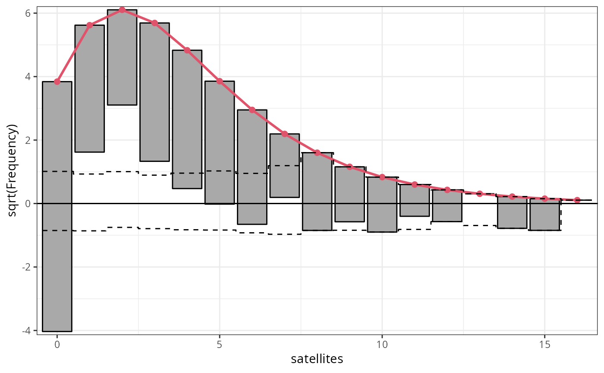
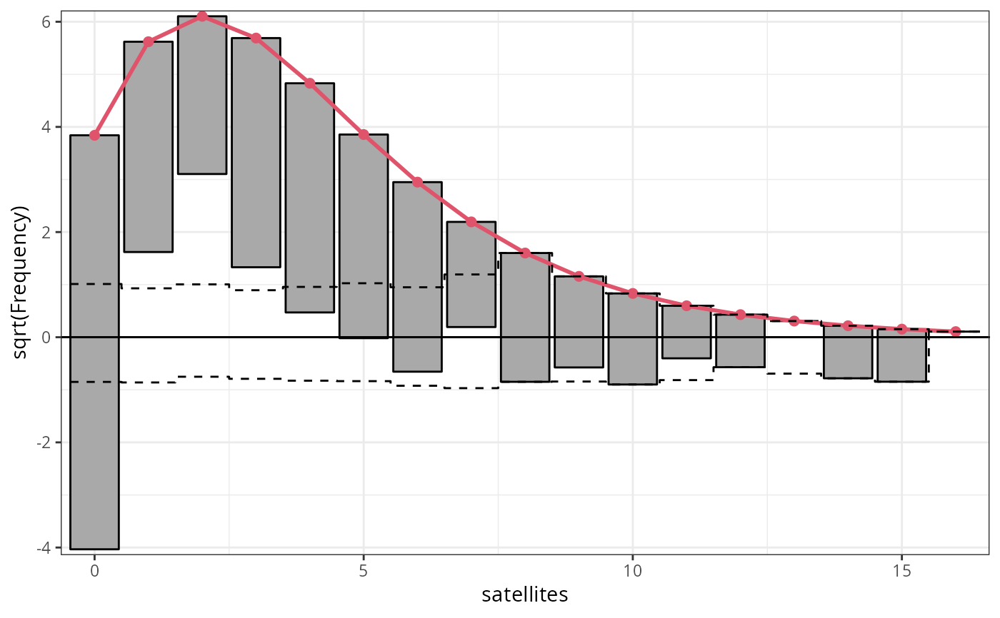

S3 Methods for Plotting Rootograms
plot.rootogram.RdGeneric plotting functions for rootograms of the class "rootogram"
computed by link{rootogram}.
# S3 method for rootogram
plot(
x,
style = NULL,
scale = NULL,
expected = NULL,
ref = NULL,
confint = NULL,
confint_level = 0.95,
confint_type = c("pointwise", "simultaneous"),
confint_nrep = 1000,
xlim = c(NA, NA),
ylim = c(NA, NA),
xlab = NULL,
ylab = NULL,
main = NULL,
axes = TRUE,
box = FALSE,
col = "darkgray",
border = "black",
lwd = 1,
lty = 1,
alpha_min = 0.8,
expected_col = 2,
expected_pch = 19,
expected_lty = 1,
expected_lwd = 2,
confint_col = "black",
confint_lty = 2,
confint_lwd = 1.75,
ref_col = "black",
ref_lty = 1,
ref_lwd = 1.25,
...
)
# S3 method for rootogram
autoplot(
object,
style = NULL,
scale = NULL,
expected = NULL,
ref = NULL,
confint = NULL,
confint_level = 0.95,
confint_type = c("pointwise", "simultaneous"),
confint_nrep = 1000,
xlim = c(NA, NA),
ylim = c(NA, NA),
xlab = NULL,
ylab = NULL,
main = NULL,
legend = FALSE,
theme = NULL,
colour = "black",
fill = "darkgray",
size = 0.5,
linetype = 1,
alpha = NA,
expected_colour = 2,
expected_size = 1,
expected_linetype = 1,
expected_alpha = 1,
expected_fill = NA,
expected_stroke = 0.5,
expected_shape = 19,
confint_colour = "black",
confint_size = 0.5,
confint_linetype = 2,
confint_alpha = NA,
ref_colour = "black",
ref_size = 0.5,
ref_linetype = 1,
ref_alpha = NA,
...
)Arguments
- x, object
an object of class
rootogram.- style
character specifying the syle of rootogram.
- scale
character specifying whether raw frequencies or their square roots (default) should be drawn.
- expected
Should the expected (fitted) frequencies be plotted?
- ref
logical. Should a reference line be plotted?
- confint
logical. Should confident intervals be drawn?
- confint_level
numeric. The confidence level required.
- confint_type
character. Should
"pointwise"or"simultaneous"confidence intervals be visualized.- confint_nrep
numeric. The repetition number of simulation for computing the confidence intervals.
- xlim, ylim, xlab, ylab, main, axes, box
graphical parameters.
- col, border, lwd, lty, alpha_min
graphical parameters for the histogram style part of the base plot.
- expected_col, expected_pch, expected_lty, expected_lwd, ref_col, ref_lty, ref_lwd, expected_colour, expected_size, expected_linetype, expected_alpha, expected_fill, expected_stroke, expected_shape, ref_colour, ref_size, ref_linetype, ref_alpha, confint_col, confint_lty, confint_lwd, confint_colour, confint_size, confint_linetype, confint_alpha
Further graphical parameters for the `expected` and `ref` line using either
autoplotorplot.- ...
further graphical parameters passed to the plotting function.
- legend
logical. Should a legend be added in the
ggplot2style graphic?- theme
Which `ggplot2` theme should be used. If not set,
theme_bwis employed.- colour, fill, size, linetype, alpha
graphical parameters for the histogram style part in the
autoplot.
Details
Rootograms graphically compare (square roots) of empirical frequencies with expected (fitted) frequencies from a probability model.
Rootograms graphically compare frequencies of empirical distributions and
expected (fitted) probability models. For the observed distribution the histogram is
drawn on a square root scale (hence the name) and superimposed with a line
for the expected frequencies. The histogram can be "standing" on the
x-axis (as usual), or "hanging" from the expected (fitted) curve, or a
"suspended" histogram of deviations can be drawn.
References
Friendly M (2000), Visualizing Categorical Data. SAS Institute, Cary.
Kleiber C, Zeileis A (2016). “Visualizing Count Data Regressions Using Rootograms.” The American Statistician, 70(3), 296--303. c("\Sexpr[results=rd,stage=build]tools:::Rd_expr_doi(\"#1\")", "10.1080/00031305.2016.1173590")doi:10.1080/00031305.2016.1173590 .
Tukey JW (1977). Exploratory Data Analysis. Addison-Wesley, Reading.
Examples
## speed and stopping distances of cars
m1_lm <- lm(dist ~ speed, data = cars)
## compute and plot rootogram
rootogram(m1_lm)
 ## customize colors
rootogram(m1_lm, ref_col = "blue", lty = 2, pch = 20)
## customize colors
rootogram(m1_lm, ref_col = "blue", lty = 2, pch = 20)
 #-------------------------------------------------------------------------------
if (require("crch")) {
## precipitation observations and forecasts for Innsbruck
data("RainIbk", package = "crch")
RainIbk <- sqrt(RainIbk)
RainIbk$ensmean <- apply(RainIbk[, grep("^rainfc", names(RainIbk))], 1, mean)
RainIbk$enssd <- apply(RainIbk[, grep("^rainfc", names(RainIbk))], 1, sd)
RainIbk <- subset(RainIbk, enssd > 0)
## linear model w/ constant variance estimation
m2_lm <- lm(rain ~ ensmean, data = RainIbk)
## logistic censored model
m2_crch <- crch(rain ~ ensmean | log(enssd), data = RainIbk, left = 0, dist = "logistic")
### compute rootograms FIXME
#r2_lm <- rootogram(m2_lm, plot = FALSE)
#r2_crch <- rootogram(m2_crch, plot = FALSE)
### plot in single graph
#plot(c(r2_lm, r2_crch), col = c(1, 2))
}
#-------------------------------------------------------------------------------
## determinants for male satellites to nesting horseshoe crabs
data("CrabSatellites", package = "countreg")
## linear poisson model
m3_pois <- glm(satellites ~ width + color, data = CrabSatellites, family = poisson)
## compute and plot rootogram as "ggplot2" graphic
rootogram(m3_pois, plot = "ggplot2")

#-------------------------------------------------------------------------------
## artificial data from negative binomial (mu = 3, theta = 2)
## and Poisson (mu = 3) distribution
set.seed(1090)
y <- rnbinom(100, mu = 3, size = 2)
x <- rpois(100, lambda = 3)
## glm method: fitted values via glm()
m4_pois <- glm(y ~ x, family = poisson)
## correctly specified Poisson model fit
par(mfrow = c(1, 3))
r4a_pois <- rootogram(m4_pois, style = "standing", ylim = c(-2.2, 4.8), main = "Standing")
#-------------------------------------------------------------------------------
if (require("crch")) {
## precipitation observations and forecasts for Innsbruck
data("RainIbk", package = "crch")
RainIbk <- sqrt(RainIbk)
RainIbk$ensmean <- apply(RainIbk[, grep("^rainfc", names(RainIbk))], 1, mean)
RainIbk$enssd <- apply(RainIbk[, grep("^rainfc", names(RainIbk))], 1, sd)
RainIbk <- subset(RainIbk, enssd > 0)
## linear model w/ constant variance estimation
m2_lm <- lm(rain ~ ensmean, data = RainIbk)
## logistic censored model
m2_crch <- crch(rain ~ ensmean | log(enssd), data = RainIbk, left = 0, dist = "logistic")
### compute rootograms FIXME
#r2_lm <- rootogram(m2_lm, plot = FALSE)
#r2_crch <- rootogram(m2_crch, plot = FALSE)
### plot in single graph
#plot(c(r2_lm, r2_crch), col = c(1, 2))
}
#-------------------------------------------------------------------------------
## determinants for male satellites to nesting horseshoe crabs
data("CrabSatellites", package = "countreg")
## linear poisson model
m3_pois <- glm(satellites ~ width + color, data = CrabSatellites, family = poisson)
## compute and plot rootogram as "ggplot2" graphic
rootogram(m3_pois, plot = "ggplot2")

#-------------------------------------------------------------------------------
## artificial data from negative binomial (mu = 3, theta = 2)
## and Poisson (mu = 3) distribution
set.seed(1090)
y <- rnbinom(100, mu = 3, size = 2)
x <- rpois(100, lambda = 3)
## glm method: fitted values via glm()
m4_pois <- glm(y ~ x, family = poisson)
## correctly specified Poisson model fit
par(mfrow = c(1, 3))
r4a_pois <- rootogram(m4_pois, style = "standing", ylim = c(-2.2, 4.8), main = "Standing")
 r4b_pois <- rootogram(m4_pois, style = "hanging", ylim = c(-2.2, 4.8), main = "Hanging")
r4c_pois <- rootogram(m4_pois, style = "suspended", ylim = c(-2.2, 4.8), main = "Suspended")
r4b_pois <- rootogram(m4_pois, style = "hanging", ylim = c(-2.2, 4.8), main = "Hanging")
r4c_pois <- rootogram(m4_pois, style = "suspended", ylim = c(-2.2, 4.8), main = "Suspended")
 par(mfrow = c(1, 1))
par(mfrow = c(1, 1))